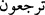

kırk sabah yoğurdu. Sonra sizi Cemâlullah’ı müşâhededen ayırıp his ve hayâl makberine
gömerek öldürecek. Daha sonra da peygamberleri vahiy nûruyla, evliyâları da îmân
nûruyla tekrar diriltecek. Peygamberler Hakk’ın cezbesine tutularak urûc ile, evliyâ da
rucû’ ile Allah’a ulaşacaklardır. Nitekim âyet-i celîlede: “Rabbine dön” (el-Fecr,
89/28) buyurularak Allah’a dönüşün zarûrî bir iş olduğu belirtilmiştir. Fakat bu dönüş
ya ihtiyârî veya iztırârî olur. ( __WORD__ ) kelimesinin ma’lûm veya meçhûl okunması buna
delâlet eder.
“O ki, yeryüzünde ne varsa hepsini sizin için yarattı.” Sizi hiçbir şey için
yaratmadığı halde her şeyi sizin için yarattı. Bilakis sizi kendisi için var etti. Nitekim
âyet-i celîlede: “Seni kendim için seçtim.” (Tâhâ, 20/41) buyurulmuştur. Yâni, benden
başka bir şey için olma. Zira ben senden başka bir şey için değilim. Benim için olduğun
kadar, ben de senin için olurum. Rasûlullah (s.a.) buyurmuşlardır ki: “Kim Allah için
olursa Allah da onun için olur.”[227] Mevcûdâttan hiçbir şeyde bir insanın Allah için,
Allah’ın da kul için olması özelliği şeklindeki isti’dâd yoktur. Burada büyük bir sır
vardır. Bu sebeble Allah’dan başka şeylerle meşgul olma ki O’nsuz kalmayasın.
“Sonra göğe yöneldi; onları yedi gök olarak düzenledi.” Burada, göklerin ve yerin
yaratılmasının, insanın varlığına tâbi olduğuna işâret vardır.
“O her şeyi bilir.” O her şeyi nasıl ve niçin yaratacağını bilir. Mahlûkatından her bir
zerre O’nu, zâtını ve sıfatlarını överek tesbîh eder. O’nun ahadiyet (birlik) ve
samediyetine (her şeyin O’na muhtaç olup, O’nun hiçbir şeye muhtaç olmamasına)
şâhidlikte bulunur ve hâl diliyle: “Rabbimiz, sen bunu boş yere yaratmadın, sen
yücesin” der.
Molla Câmî (k.s) der ki: Dünyâ ve âhıret senin vahdetinin cilvegâhıdır. “Allah
şehâdet eder ki,” (Âl-i İmrân, 3/18) âyeti buna âdil şâhittir.
[226]. el-Kevâşî’de zikredildiğine göre Hasan Basrî (r.a.) demiştir ki: Allah Teâlâ
yeryüzünü Beyt-i Makdis’in bulunduğu yerde, üzerinde duman bulunan bir avuç dolusu
taş şeklinde yarattı. Sonra dumanı yükseltip ondan gökleri yarattı. Taşı ise ilk yarattığı
yerde bırakıp sonra ondan yeryüzünü yaydı.
İbni Abbas (r.a.)’dan rivâyet edilmiştir ki: Cenâb-ı Hakk’ın ilk yarattığı şey, uzunluğu
on bin ve genişliği bin yıllık mesâfe olan bir cevherdir. Allah Teâlâ, ona heybet ile bir
nazar kılınca cevher eriyip dalgalanan bir su hâline geldi. Sonra ondan bir duman
yayılıp köpükle birleşerek suyun üzerine yükseldi. Köpükten yeryüzü, dumandan gök
yaratıldı.
Demişlerdir ki: Gök bir dumandan yaratılmış, rüzgâr ile yükseltilmiş, bir işâretle
cüzlerine ayrılmış, direksiz olarak durdurulmuş ve bir nefha ile kırılıp parçalanmıştır.
“Onları yedi gök olarak düzenledi... Hiç yok iken onları eksiksiz ve çatlaksız olarak